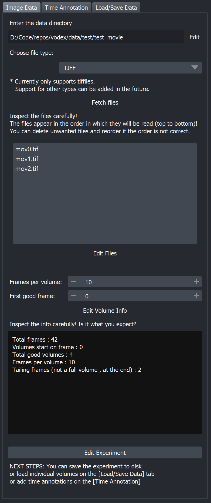
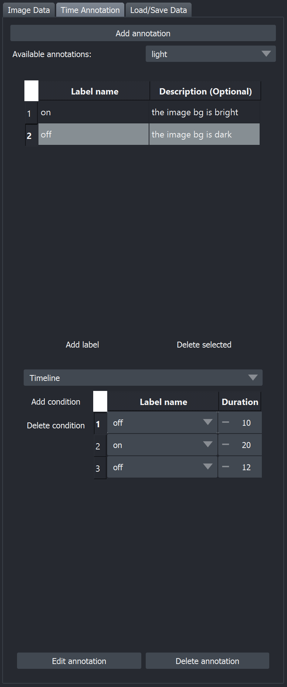
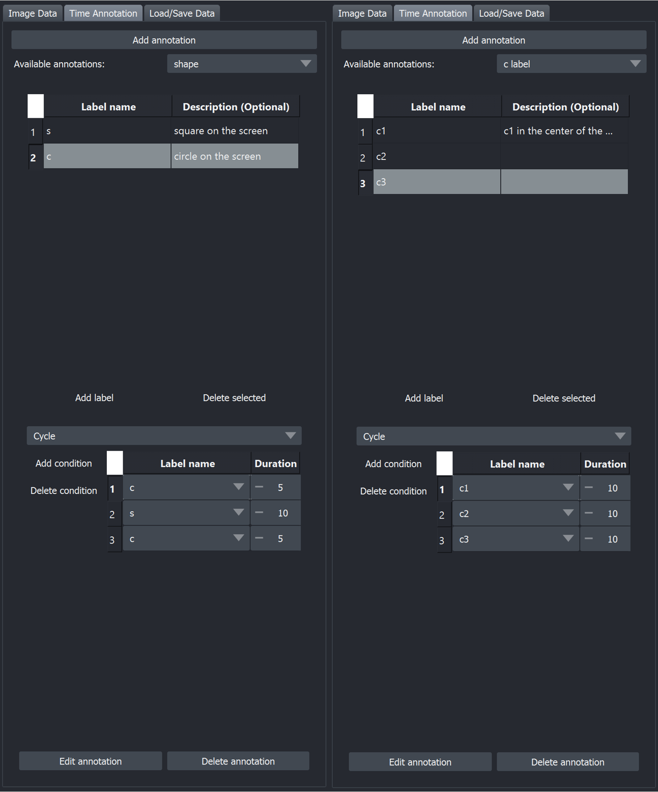
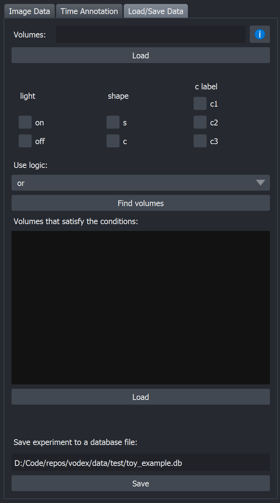
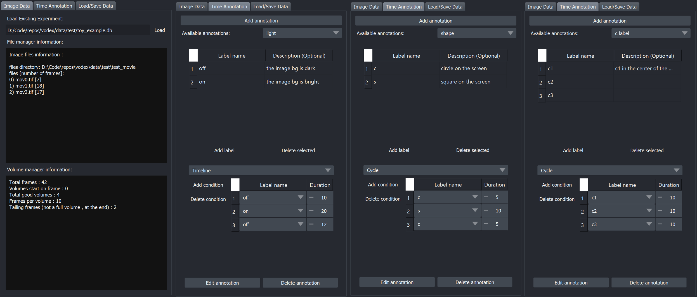
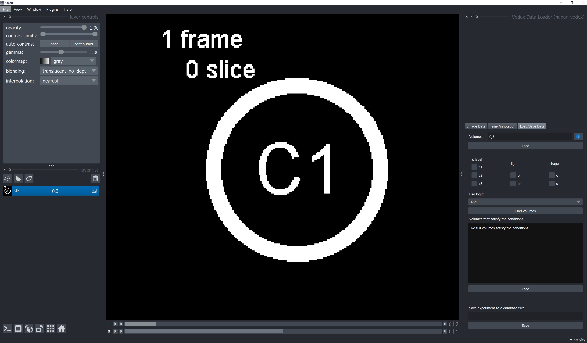
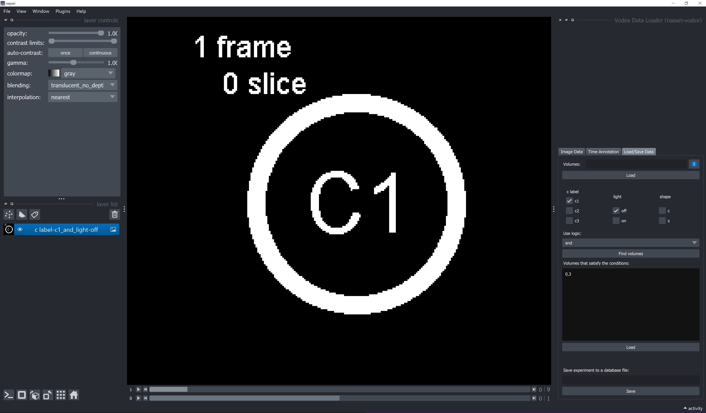
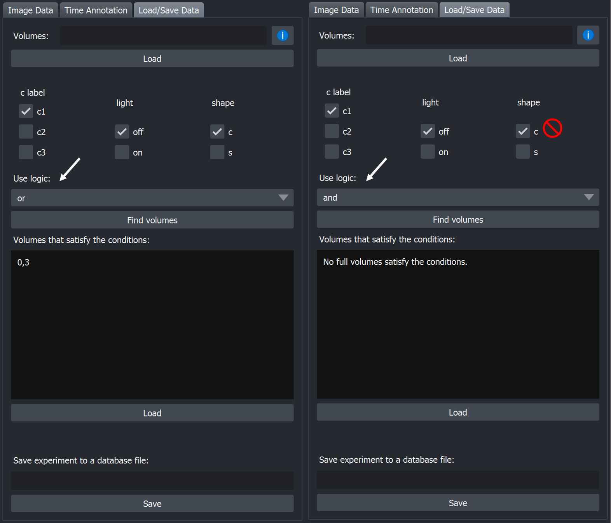
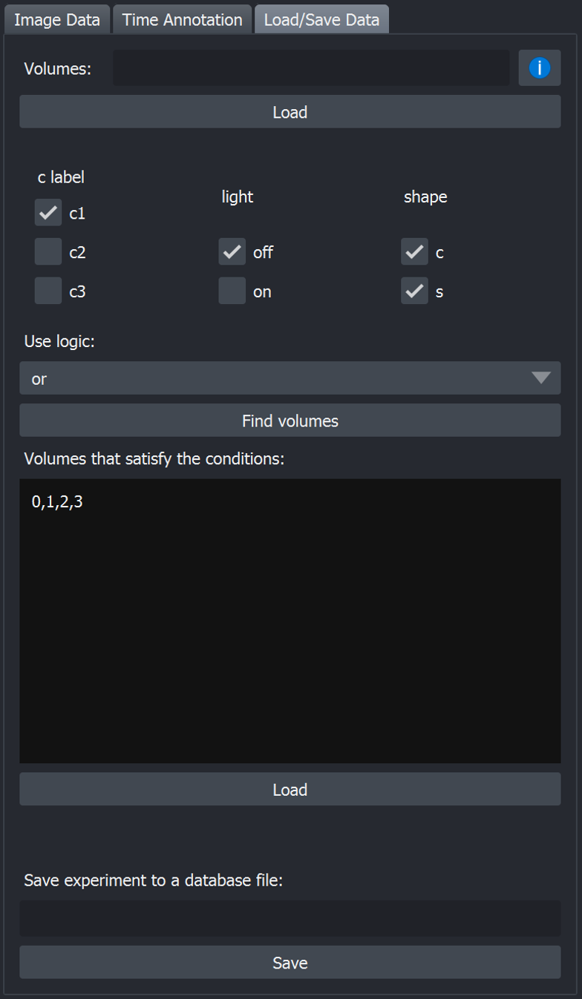
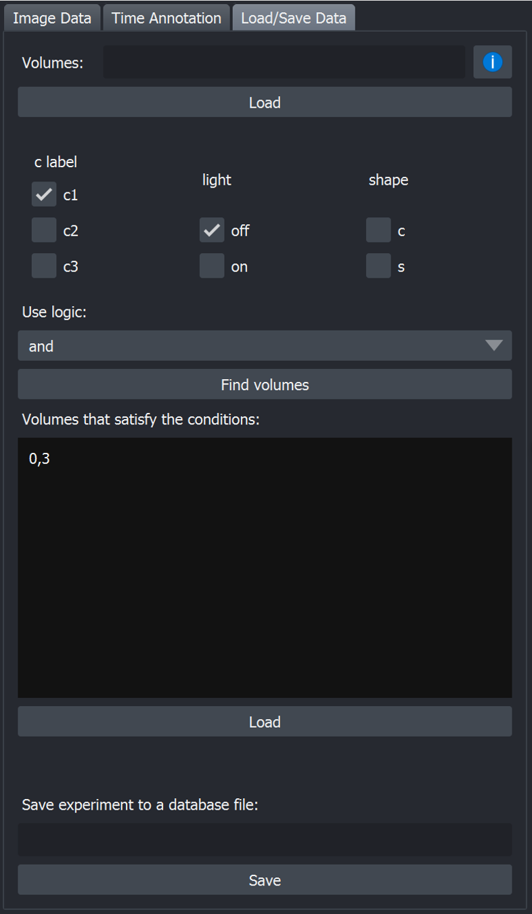

Usage
This section contains instructions how to use napari-vodex.
Launch napari-vodex
After following the installation instructions, you should see napari-vodex in your napari under Plugis --> Vodex Data Loader (napari-vodex). When you start it, it creates two buttons - Load Saved Experiment and Create New Experiment
Create New Experiment
Let's create the annotation for the toy dataset. Hit Create New Experiment. It will initialize three tabs:
The Image Data tab contains the information about the image files, their order and the information about the volumes : frames per volume and the first frame in the recording that is at the beginning of a volume.
The Time Annotation tab will contain the information about the time annotations ;)
The Load/Save Data tab allows to load individual volumes: based on their ID or based on the time annotation and also allows to save experiment (the information from the Image Data and Time Annotation tabs) to a database for future use with vodex or napari-vodex.
1. Image Data
 Start with the Image Data tab.
{kind=link}
You can see an example of a fully filled out tab for the Toy Dataset on the right. For more details on how it was filled out, see the expandable box at the bottom.
- Click
Browseand choose the folder that contains your recording. The recording could be saved as multiple files. - Choose
file type. Currently only TIFF files are supported, but if you added the support to your type of files, as described in Contributions, your file type should appear here. - Hit
Fetch files. Vodex will search the directory for the files of the type that you choose. The files will appear in the window below. - Inspect the files carefully! The files appear in the order (top to bottom) in which they will be read by vodex. It is very important that they are in the correct order, or the rest of the annotations will be off. You can
drag the files to change the orderand delete the files that you don't want by clickingDelete Filewith a file selected. ClickSave File Orderwhen you are done. - Enter
frames per volume. If you work with a 2D data but still want to use vodex, leave frames per volume as 1. - If your recording was not synchronized with the volumes, you can specify the first frame in the recording that correspond to the beginning of a full volume (
first good frame). It the beginning of the recording is at the beginning of a volume, leave it as 0. - Hit
Save Volume Info. - Read carefully the short description of your data that: how many total frames, how many full volumes and how many frames that don't make a full volume at the beginning and at the end of the recording. If everything looks good, hit
Create Experiment. This will allow you to load volumes using their ID numbers (For example volumes number 3, 8 and 30 to 40) and to add time annotations.
Toy Dataset: Creating experiment
The data used in these examples is a toy dataset, described in Data. You can download the toy dataset from GitHub. To create an experiment, we click Browse, locate the folder with the three tif files. Choose TIFF from the file type drop down menu, and click Fetch files. The files are in the proper prder already, so we click Save File Order. We enter 10 for frames per volume and click Save Volume Info. You can see that the total number of frames is 42, which is correct, there are 4 volumes and 2 extra frames at the end, which is also correct. Finally, we click Create Experiment.
2. Time Annotation
 Start with the Image Data tab. Switch to Time Annotation tab and click Add annotation. You will be asked to create an annotation name: this is the name of the phenomena that you are describing. It could be some kind of stimuli/ drug/ behaviour, etc. After you name the annotation, the tab to enter the labels and the actual annotation of your recording.
{kind=link}
You can see an example of a filled out tab for light annotation for the Toy Dataset on the right. For more details on how it was filled out, see the expandable box at the bottom.
-
Click
Add labelto create a label. A label is a particular condition: a certain state of the phenomena that you are describing. Add as many labels as you need. Double click on the description cell to add the description for each label (optional). You can delete a line by selecting it and clickingDelete selected. -
Choose if the annotation is a
Cycleor aTimeline. Cycles can describe a short period of time and will be repeated to cover the duration of the whole recording. Timelines must describe the whole recording. - Next you need to describe the order in which the conditions are following and their duration (in frames). Click
Add conditionto add a line to the annotation. You can delete a line by selecting it and clickingDelete condition. - After you are done, click
Add annotation to the experiment. This will record the annotation and you can now use it at theLoad/Save Datatab to choose the volumes that you want to load.
One experiment can have multiple annotations. Add as many annotations as you need. You can switch between the annotations with the combobox at the top-right corner of the tab, by the Available annotations: label.
Remember that you must press the Add annotation to the experiment button to be able to use the annotation to load volumes and to save it when you are saving the experiment to a DataBase.
Toy Dataset: Adding time annotation
 By following the time annotation description, for the toy dataset, we fill out the three annotation types. The other two annotations for the toy experiment are on the right (click to expand).
{kind=link}
3. Save Experiment to a DataBase
 Once you filled out the Image data information and added the annotations, you can save the experiment into a database. While you don't have to save the experiment before loading the volumes, we highly recommend that you do so for your future reference, especially if you plan to use the volumes that were loaded with VoDEx in the subsequent analysis. This will give you the ability to come back to the annotation later and recheck that you did not make any mistakes.
{kind=link}
You can see an example of a Load/Save Data tab after we saved our annotation on the right [click on image to zoom in]. The bottom line shows the saved file location.
Go to the Load/Save Data tab and click Save button at the bottom.
Choose the folder and give your database a name (*.db).
How to explore the DataBase content
The DataBase is using SQLite and we recommend using a DB Browser for SQLite to explore the DataBase content. It is also a good place to test out your queries if you want to add some functionality to the vodex dbmethods module.
Load Saved Experiment
To load the experiment, choose Load Saved Experiment after launching napari-vodex. Then click the Load button to search for the saved database file. Vodex will load the experiment and fill out all the Image Data and Time Annotation information, that you can see in the corresponding tabs.
You can edit and delete time annotations and add more. These changes will not be saved to the original file, remember to save the file to keep the changes.
Toy Dataset: Loading an experiment
After we load the example that we saved in the previous section, all the fields look the same as when we filled them out. [click on image to zoom in]. 
{kind=link}
Load Volumes into Napari Viewer
Finally, you can use napari-vodex to load volumes into napari. To do so you must have experiment created ( or loaded) and head to the Load/Save Data tab.
Load based on volumes ID
Volume IDs are simply the numbers in which they follow from the beginning of the recording. The volumes numbering starts with 0: the first full volume's ID is 0, the second volume's ID is 1, the third's ID is 2 , etc. Enter the IDs of the volumes at the Volumes: edit line on top of the tab and press Load. Vodex will load the requested volumes and name them with the same text that you used to request them.
How to specify the volumes
You can specify the volumes as a line of integers separated by a comma (3, 4, 5, 6, 7) or request a slice by specifying the first and the last volume to load (3:7). Both examples will load the volumes with IDs 3, 4, 5, 6, and 7. You can mix the two methods. For example 2, 5:8, 3, 6:9 will load the volumes with IDs 2, 5, 6, 7, 8, 3, 6, 7, 8, 9 in this order. Note how the same volume can be loaded many times and the volume IDs do not have to be all ascending.
Toy Dataset: Loading volumes based on volume IDs
 An example shows the first slice in the two volumes, that we loaded : volumes with IDs 0 and 3. Note that the image layer created in napari (in the left panel) is clled 0,3 as well. [click on image to zoom in].
{kind=link}
Note: frames numbers start at 1 , while volume IDs and slice numbers start at 0.
Load based on experimental conditions
To load volumes based on conditions, you must have at least one time annotation added to the experiment (make sure you pressed that Add annotation to the experiment button).
If you have added time annotations to the experiment, you will see the annotation's names and labels. Click the checkboxes by the labels for which you want to get the volumes and choose how to combine them with a logical or or a logical and. Then click Find volumes button to get a list of volume IDs that correspond to the chosen conditions, or Load to load all such volumes into napari.
When you are choosing or all the conditions you picked will be combined with a logical or. Meaning, vodex will pick volumes with slices that correspond to at least one condition that you picked. It doesn't mean that the whole volume corresponds to one of the conditions: half of the slices in the volume can correspond to one condition and the other half to the other.
When you are choosing and, vodex will pick volumes with slices that correspond to all the condition that you picked at the same time. If at least one slice in a volume does not correspond to all the conditions, such volume will not be picked.
Toy Dataset: Loading volumes based on conditions
 An example shows the first slice in the two volumes, that we loaded, such that both is true at the same time: the background is dark and C1 label is present on every slice of the volumes. These happen to be volumes with IDs 0 and 3. Note that the image layer created in napari (in the left panel) is named according to our query c label-c1_and_light-off. [click on image to zoom in].
{kind=link}
Toy Dataset: About or and and logic
-
 Compare the
orandandbehavior at the two images on the right. Note how when the logic is set toor, volumes 0 and 3 are being picked. Even though only half of each volume corresponds toshape-c[click on image to zoom in]. When we swith logic toand, no volumes satisfy the condition.
-
 Note how when the logic is set to
or, if you have all the conditions in any annotation picked, it will always return all the volumes in the recording, ignoring the rest of the labels that you choose and even if no full volumes correspond to each of the conditions individually. [click on image to zoom in].
-
 Note that you do not have to pick conditions from all the annotations. When no labels are picked for a particular annotation, that annotation is ignored. [click on image to zoom in].
{kind=link}
{kind=link}
{kind=link}